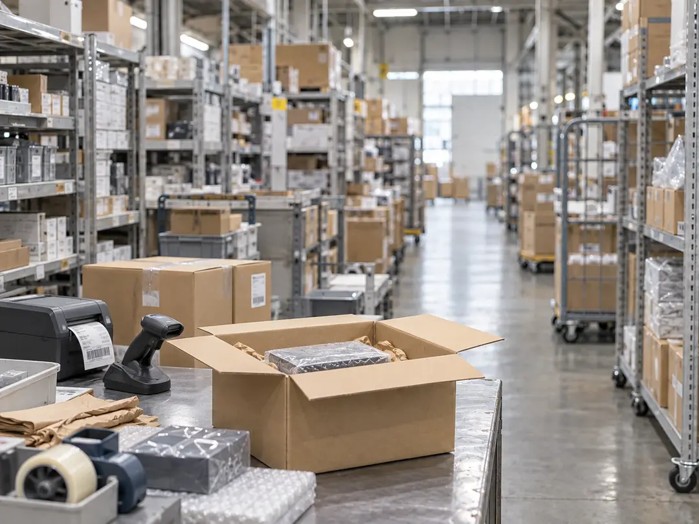
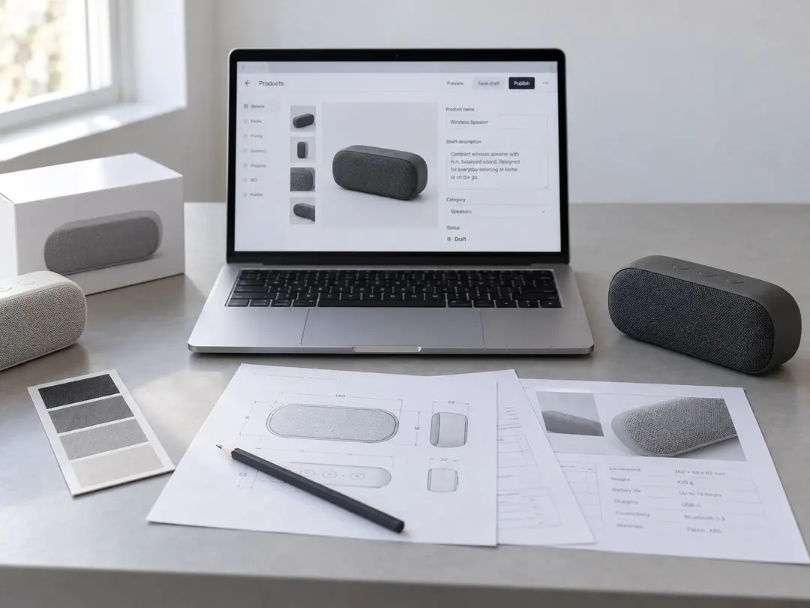
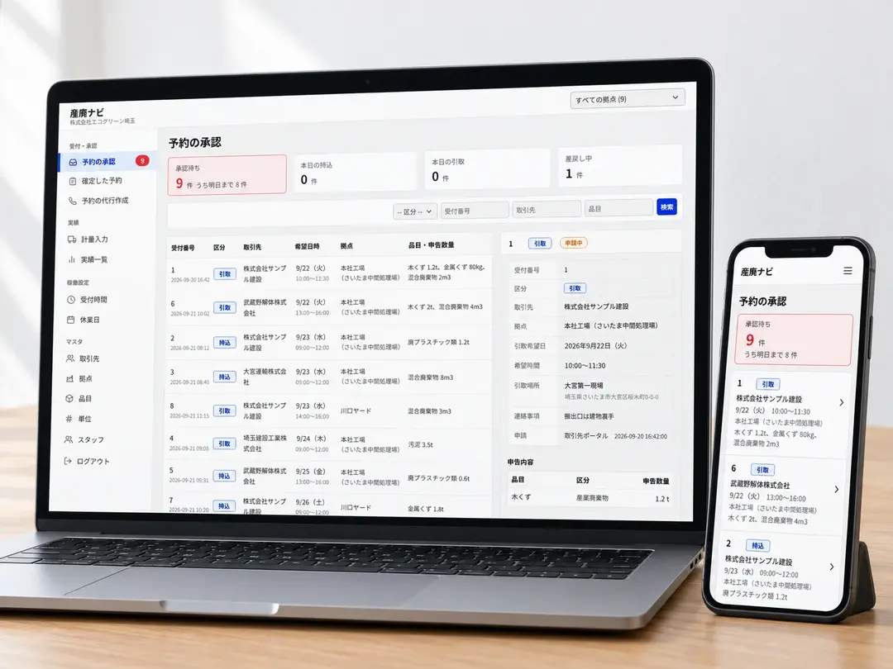

01社会を繋ぐ”ハシゴ”をかける
01Vision
商品、市場、現場、会社。
それらを繋ぐ機能をもつマーケティングや物流は、
個別最適ではなくしっかりと歯車が噛み合った状態であるべきだ、と信じます。
私たちはテクノロジーと仕組みを活用し、全てがなめらかに連動する世界を創造します。
02Service

02
03
04News & Blog
01Vision
商品、市場、現場、会社。
それらを繋ぐ機能をもつマーケティングや物流は、
個別最適ではなくしっかりと歯車が噛み合った状態であるべきだ、と信じます。
私たちはテクノロジーと仕組みを活用し、全てがなめらかに連動する世界を創造します。
02Service

01
02
0304News & Blog